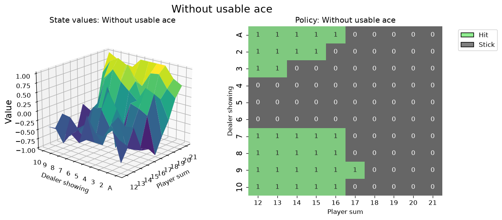

22 September 2026 · TypeSafe Jev 1.13
Jev already knows blackjack. It does not know Kuhn poker.
Jev is a decision model. You send it a state and a list of actions. It returns one action, a probability for each action, and a confidence score. It does not write a paragraph.
We played two card games with it, through the OpenRouter Decisions API. Blackjack is a famous one-player decision against a dealer who follows a fixed rule. Kuhn poker is a two-player game whose correct play is a mixed strategy. The first game is everywhere in text. The second is an academic example with twelve decision points and a known answer.
Blackjack, with no rules in the prompt
The environment was Gymnasium Blackjack-v1, Sutton and Barto rules. The prompt did not say that the goal is 21, that a total over 21 loses, or that the dealer draws to 17. The instruction was “Choose the action,” and the two options were stand and hit. The state was the observation from the environment: the player total, the dealer card, and a boolean named usable_ace.
A random sample of hands hides the rare ones. Soft 12 against a dealer 3 shows up about once in 2,200 deals. We used a grid instead: player totals 12 through 21, every dealer upcard, hard and soft, five deals each. That is 1,000 hands and 1,341 decisions.
| Measure | Result |
|---|---|
| Agreement with basic strategy | 83.7% (1,122 of 1,341) |
| Record | 464 wins, 444 losses, 92 pushes |
| Mean return per hand | +0.020 ± 0.030 |
| Median latency | 415 ms |
| Cost for 1,000 hands | $0.019 |
The mean return is not a claim about a casino. The grid deals a 20 as often as a 12. In a real shoe, the strong hands are more common.
On hard totals, the policy is the textbook one. Against a dealer 4, 5, or 6, Jev stood on every total from 12 to 21. Against a 7, 8, 9, 10, or ace, it hit 12 through 16 and stood on 17 through 21. Nobody told it that the dealer draws to 17.

Soft totals are where the state hides the rule. An ace counted as 11 can fall back to 1, so hitting soft 17 cannot bust. Basic strategy hits soft 17 against every dealer card. Jev stood. The state said player_sum: 17 and usable_ace: true, and the prompt never said what the flag means. The number 17 is the fact the model used.

On a close call, the confidence dropped. Hard 15 against a dealer 2 is a stand in the textbook, and the two actions are worth almost the same. On one such hand Jev returned 50% hit, 50% stand, and confidence 0. On repeated visits, confidence stayed under 0.15. On hard 20 against a 6, confidence was above 0.85 and the stand probability was above 90%.
Kuhn poker, with the rules written out
Kuhn poker uses three cards, jack, queen, and king. Each player antes one chip and gets one card. A player can check or bet. A player who faces a bet can fold or call. The higher card wins at a showdown. There is one equilibrium value, −1/18 chips per hand for the first player. The second player’s equilibrium strategy is unique. The first player’s is a one-parameter family.
The full rules were in the question. The state held only facts: the card, the betting so far, the pot, and the chips to call. Option names matched the situation, so a pass was “check” with no bet live and “fold” when a bet was live. We asked Jev about all twelve situations, ten times each, and built a strategy table from the probabilities. OpenSpiel then computed the exact cost of that table against a perfect opponent. We also played 1,800 hands, 300 for each of three equilibrium opponents and both seats, sampling an action from the returned probabilities.
| Player | Chips a perfect opponent wins per hand |
|---|---|
| Nash | 0 |
| Jev | 0.22 |
| Coin flip | 0.46 |
Against the equilibrium opponent, the exact value of Jev’s table is −0.129 chips per hand in the first seat, where equilibrium itself is −0.056. In the second seat Jev loses about 0.07 to 0.08, where equilibrium wins 0.056. The 1,800 played hands landed on those numbers. Median latency was 429 ms. The played hands cost $0.049.
The mistakes are the ones a beginner makes. With no bet live, Jev bets 50% to 65% of the time on every card. Facing a bet, it calls with a jack about 40% of the time. A jack cannot win a showdown. It folds a king about 15% of the time. A king cannot lose one.

Two extra yes-or-no questions rode along in the same call. “Is your card the higher one?” has answers 0, 0.5, and 1 for jack, queen, and king. Jev said 0.43, 0.54, and 0.57. “Is the opponent bluffing?” stayed near 0.5 in every situation.
What this is for
Jev can replay a decision that already exists in words. Blackjack, with the rules omitted, is that kind of decision, until the state compresses a rule into a name. Kuhn poker, with the rules supplied, still requires a frequency: how often to bluff, how often to call with the middle card. Jev did not find those frequencies.
Put the fact in plain language. A flag named usable_ace is not the fact. Leave a sure thing to code, such as “call with a king” and “fold a jack.” Use the probability when the call is close, as it was on hard 15 against a dealer 2. Do not read a low confidence as a mixed strategy. In Kuhn poker the low confidence arrived with the wrong action.
Sources
- Blackjack write-up, with the grid, the latency, and the hard-15 example.
- Blackjack charts and hand log.
- Kuhn poker report, with the twelve-row table, the checks, and the top-choice comparison.
- Kuhn charts and metrics.
- Repository. Blackjack code is in
src/blackjack_lab. Kuhn code is insrc/kuhn_lab.